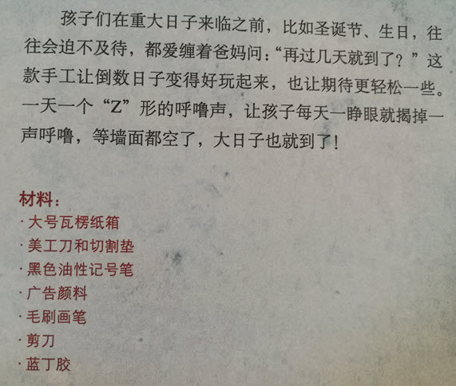
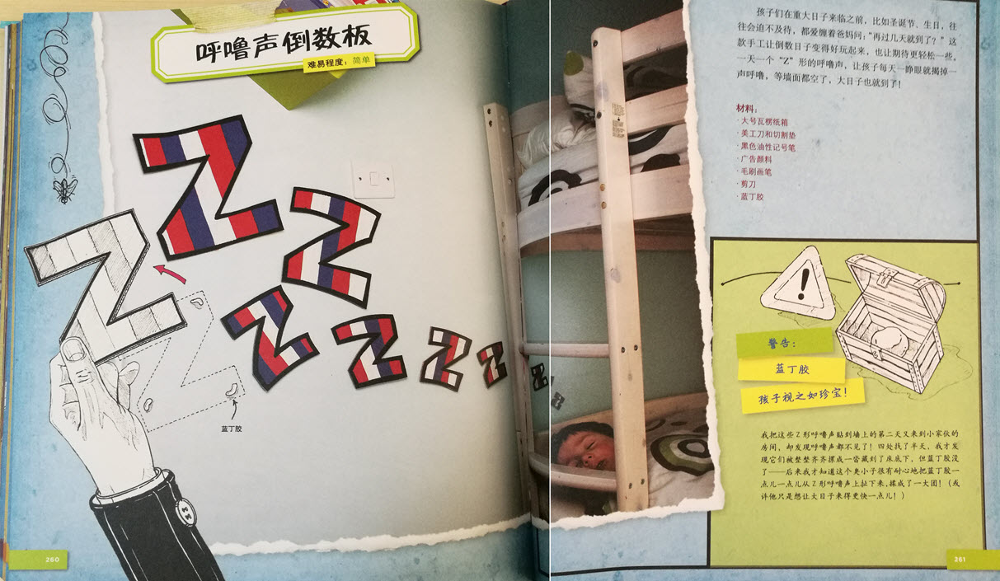

【导入】
2016.5.20晚饭后，我跟Elly说，我们做个“呼噜声倒数板”吧？然后，我把她带到她的床前，指着床边的白墙。然后在一张A4纸上，用铅笔画了示意图，从小到大几个“Z”。
Elly表现出很大的兴趣超出我的预期。
【设计/制作】
1、我找来废纸盒(不厚，可以方便用剪刀剪；但是比A4纸要硬挺），拆散为纸板；
2、设计：使用铅笔借助三角尺在纸板画“Z”字形，使用剪刀剪下来。
3、我让Elly照着我的方法，在纸板上画大小不一的“Z”字形，我负责剪。最后由再由她涂色。
并参照教材画了涂色的辅助线，

